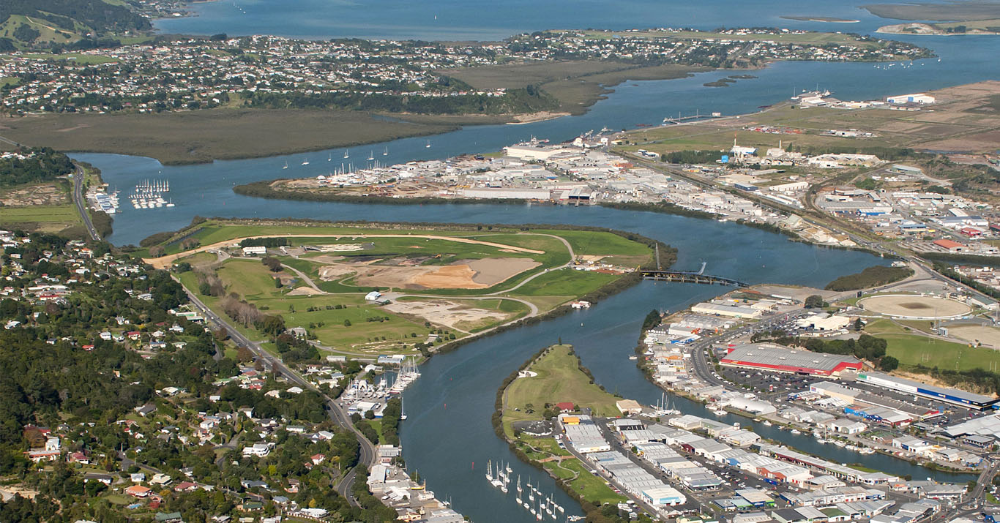
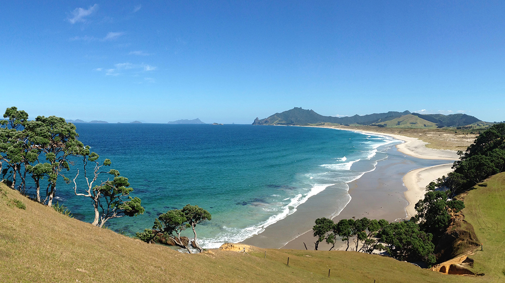
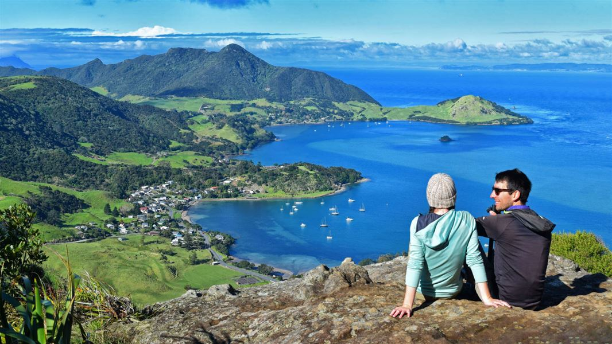

Whangarei is situated in the far north (Approx. 2 hours drive from Auckland), some like to call it the winterless north due to its subtropical weather. Whangarei is a small city with everything within close proximity.



The Esplanade Development
The Esplanade development is located in Kamo which is a 12 min drive to the town basin or main city. In addition, the development is next to the Kamo Bypass SH1 allowing you to get straight on the highway in 5 mins. Nothing is too far in Whangarei and
the development is situated close to some of its main attractions and things to do:
Convenient Surroundings
Activities
Mount Parikhaka
Mount Parihaka is the highest point in the city and a is a lovely walk through native forest with spectacular views as the end result. Totally worth the hike up!
Town Basin/Main centre
Just 12 mins drive, Quayside at the town basin is popular location for gathering for locals and visitors. It has a leisurely feel for entertainment and eating with lots of cafes and restaurants to choose from as you watch the yachts dock in and out of
the marina. The Town basin is where all the shops are located including supermarket, fashion stores, everything. You don’t have to go any further than town to get what you require.
Whangarei Falls – Otuihau
One of the popular tourist destinations and well known landmarks. The falls are Just 6 min drive from The Esplanande and has 26.3 M high waterfall with two viewing platforms for you to embrace the beauty.
Other Things to Do
Whangarei Gold club is located 5 mins drive from the development if you fancy a round of 12 holes. There are meusums, gardens and much more to do in the city of which info can be found on their website.